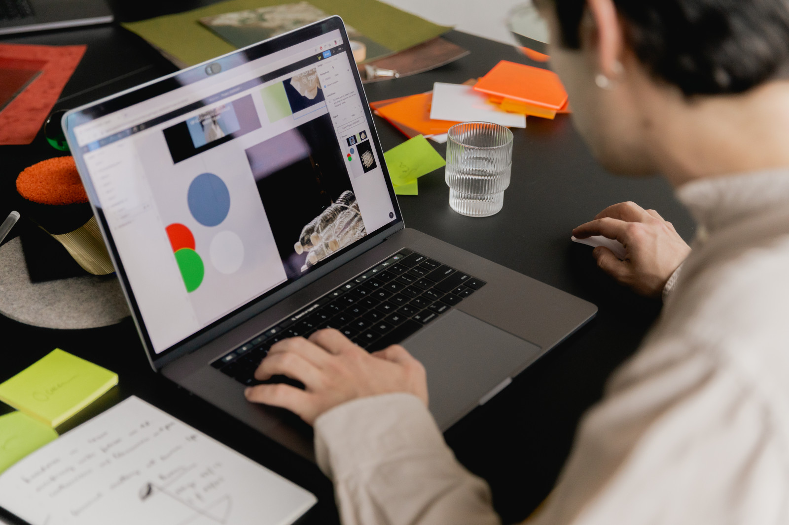
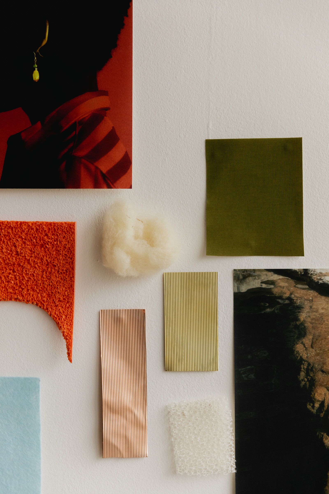
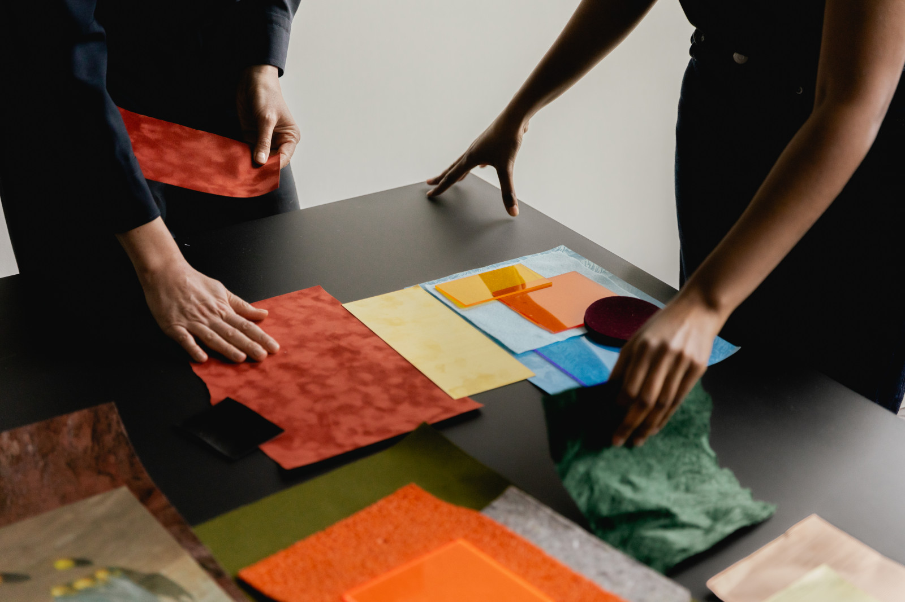
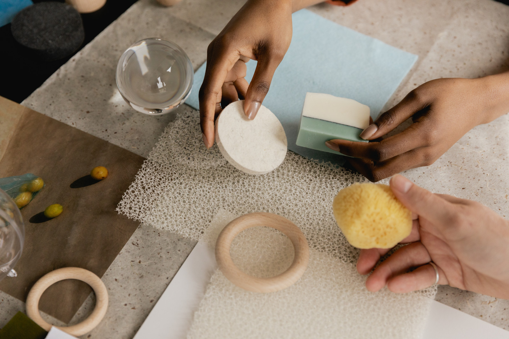
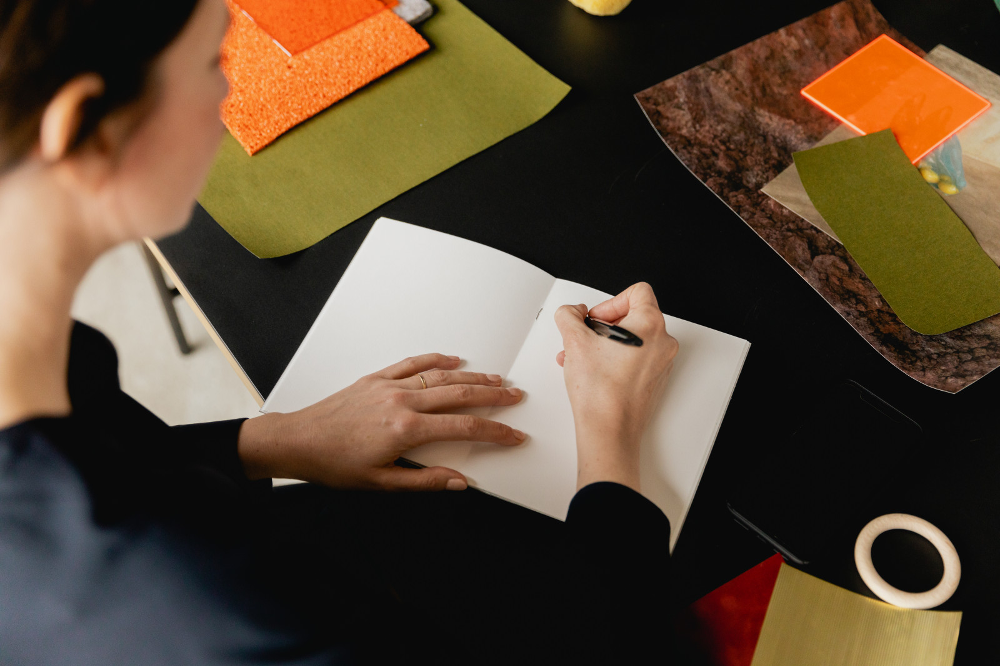
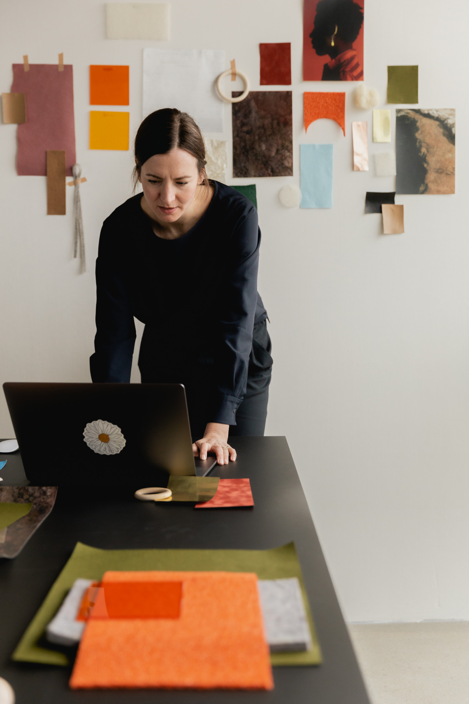
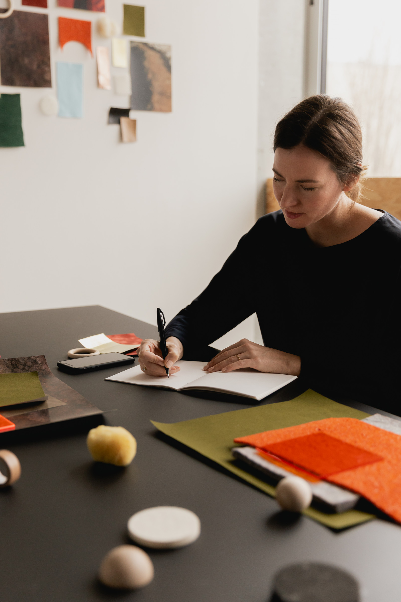

01
Drop
Drop a texture, a photo, or a screenshot. PNG, JPG, WebP, or AVIF. No account.
Textures, photos, and screenshots. Vector Drop traces them to SVG on your Mac, then copies it to the clipboard.







Drop a texture, a photo, or a screenshot. PNG, JPG, WebP, or AVIF. No account.
Lanczos3 upscales it, then potrace draws the curves for logos and type.
The SVG goes to the clipboard. Paste it into Figma, Sketch, or a file.
Apple Silicon. macOS.